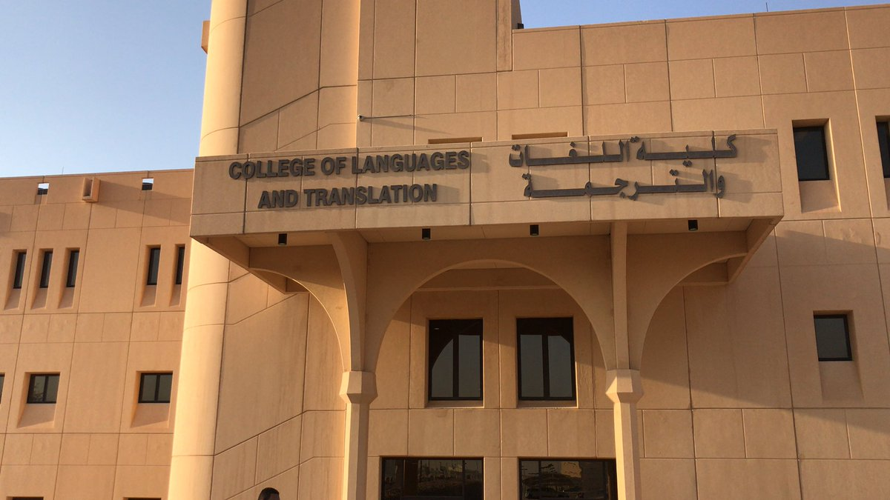

توفر جامعة الملك سعودي في المملكة العربية السعودية لطلاب المسار الإنساني عدداً من التخصصات المتنوعة التي تتلاءم مع قدراتهم ومهاراتهم العلمية، حيثُ تُعد السنة الأولى المشتركة لمسار الكليات الإنسانية عبارة عن فصل دراسي واحد فقط يتم بعد إتمامه التخصص تنافسياً في أحد التخصصات التالية:
- تخصص اللغة العربية.
- تخصص علم المعلومات.
- تخصص اللغة الانجليزية.
- تخصص الجغرافيا.
- تخصص الإعلام.
- تخصص التاريخ.
- تخصص الدراسات الاجتماعية.
- تخصص علم الاجتماع.
- تخصص علم النفس.
- تخصص دراسات إسلامية.
- تخصص التربية الفنية.
- تخصص التربية الخاصة.
- تخصص التربية البدنية وعلوم الحركة.
- تخصص دراسات قرآنية.
- تخصص القراءات.
- تخصص الحقوق.
- تخصص العلوم السياسية.
- تخصص اللغات والترجمة.